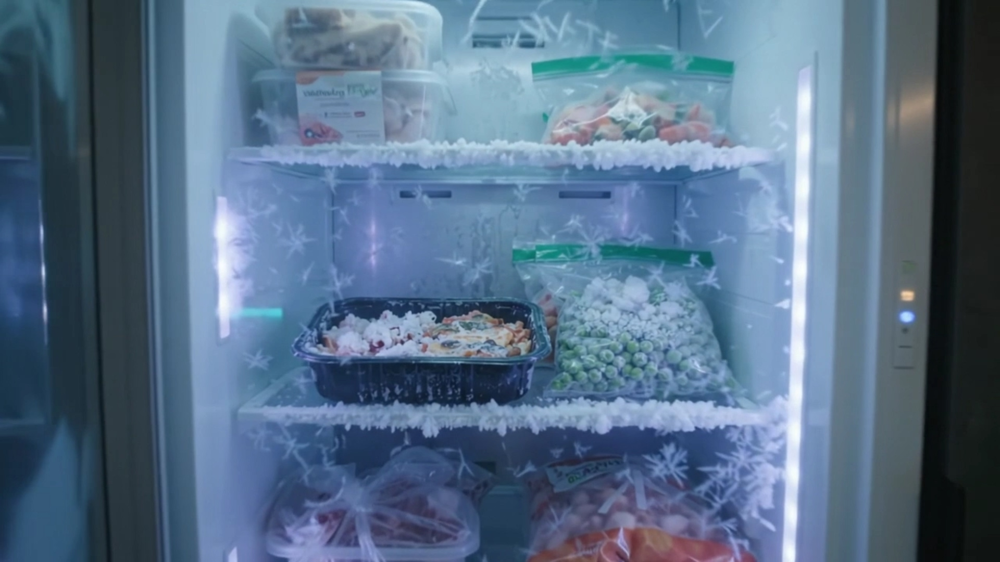

X² Engine // The 2 Clocks Math Problem
When Clock 2 (Statutory Drift) Outruns Clock 1 (Internal Telemetry).
Underwriters deny claims when municipal, state, and federal codes update faster than your internal security cadence. Our X² Engine cross-references your local telemetry against federal (NIST CSF 2.0, SEC, CISA KEV), state (NYDFS Part 500), and municipal ordinances — locking your $150 Times2 Shift Report Dossier with an Algorithmic Cryptographic SHA-256 Seal.
X² SYNC: 96%
● Outer Ring: Statutory & Ordinance Lock (96%) |
● Inner Ring: Local Telemetry (92%)
CORE FEATURE // REGULATORY MAGAZINE
ISSUE // NOV 2026
Times2 Shift — Drift Dispatch

FEDERAL & STATE OVERLAY
NYDFS 23 NYCRR 500 & SEC 4-Day Incident Clock
Automated cross-reference of MFA enforcement, annual CISO attestation, and 72-hour underwriter notification clocks.
MUNICIPAL & UNDERWRITER MATRIX
X² Engine Live Citation Feed
- NIST CSF 2.0 Govern (GV) & Protect (PR) — Mapped
- NAIC Insurance Data Security Model Law (MDL-668) — Mapped
- Municipal Commercial Continuity Code §14-402 — Verified
- CISA KEV Directive 22-01 — 0 Unpatched Flags
Updated every 5 minutes via worker.py X² Engine
PRODUCT // SHA-256 SEAL LOCK
$150 Times2 Shift Report Dossier
$150 / Sealed Dossier
Maps your domain against our municipal ordinance & regulatory update database, reconciles Clock 1 & Clock 2 divergence, and issues a cryptographically sealed Jinja2 PDF/HTML Dossier.